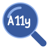
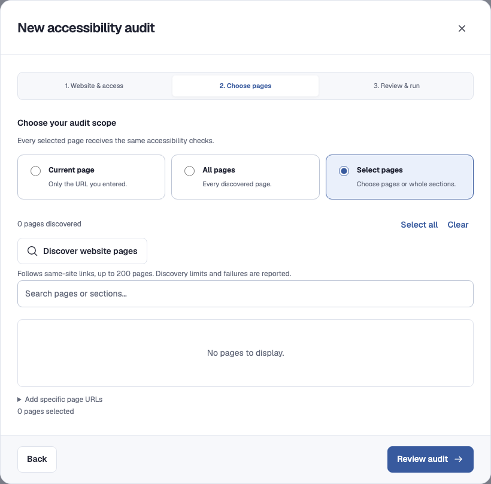
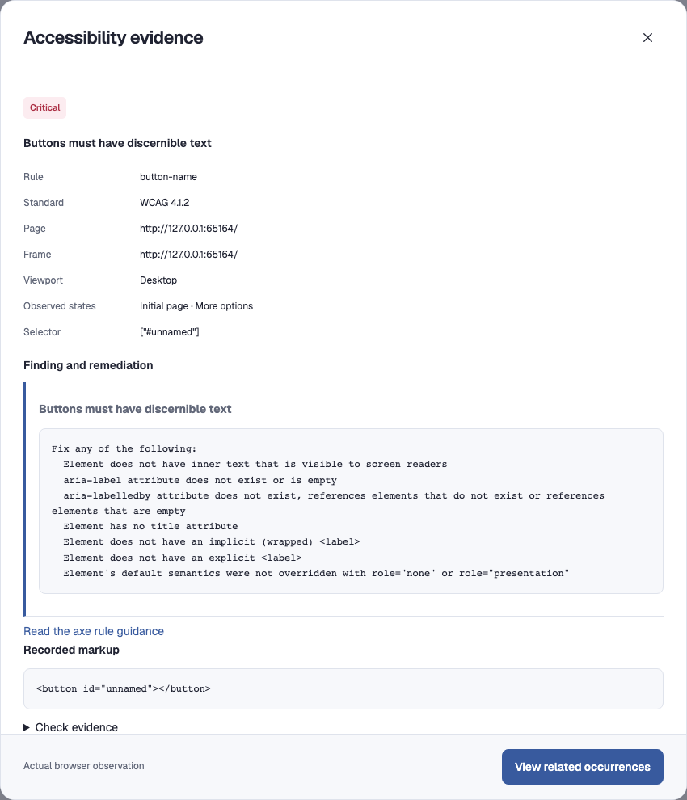
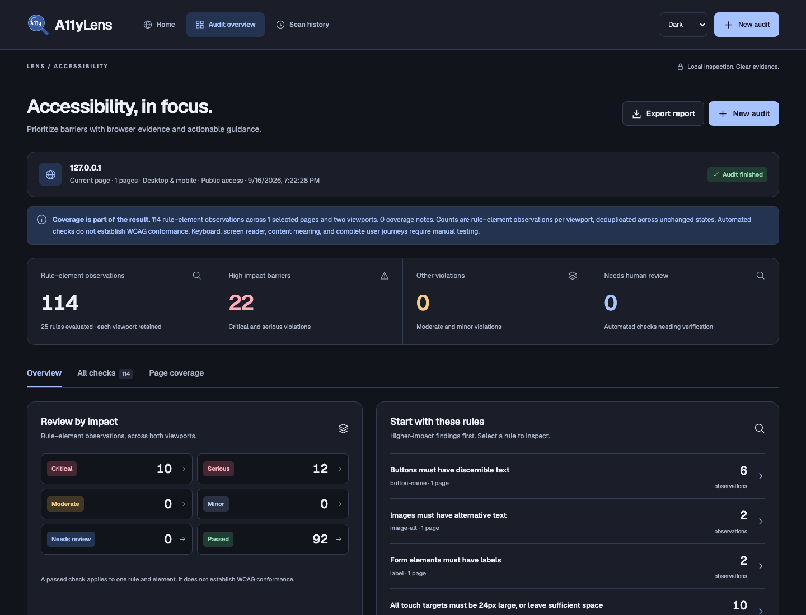
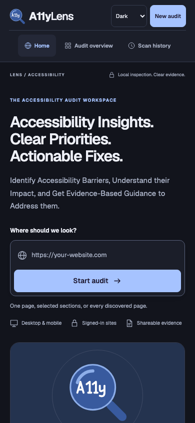

{kind=link}
{kind=link}
Locate the Barrier.
Page, frame, viewport, and selector keep the finding connected to its context.

A11yLensIdentify Accessibility Barriers, Understand their Impact, and Get Evidence-Based Guidance to Address them.
Follow the journey from page selection to a shareable report. Each view comes directly from the working application.

Choose the current page, all discovered pages, or a selected set. This setup illustration uses example.com; no scan of that domain was performed.
Product walkthrough, not a live scanner. Findings shown here come from a real scan of a controlled local test fixture. No customer data is shown.
An issue name is only the beginning. Connect it to the element, the observed behavior, and guidance for what to investigate next.

Page, frame, viewport, and selector keep the finding connected to its context.
Review the rule reference, recorded markup, and check details together.
Use rule-specific guidance to investigate a fix, then test the changed experience.
Automated checks do not establish WCAG conformance. Keyboard journeys, screen-reader behavior, content meaning, and complete processes still need human review.
Light and dark themes, responsive layouts, keyboard navigation, and focus restoration support the work without competing with it.


I developed A11yLens to connect automated inspection with a useful review workflow, using AI-assisted development and scenario-driven validation.
The scanner reuses the confirmed tab to retain tab-scoped sessionStorage. Reloading between viewports resets document state while preserving that context.
Refresh recovery, expired-session handling, and visible storage warnings help keep an interrupted workflow understandable.
Bounded page discovery, supported interactions, and explicit coverage notes keep unknowns separate from successful checks.
axe-core provides the accessibility rules engine. A11yLens brings together scanning, scope selection, issue triage, evidence, recovery, and report sharing.
The local integration suite covers actual findings, shadow DOM, disclosure states, report exports, and cancellation. Six targeted scenario checks cover authentication storage, password settings, redirects, refresh recovery, closed-session recovery, and storage exhaustion.
Design checks cover both themes, desktop and mobile layouts, keyboard tabs, focus restoration, and enlarged text. These are scoped results, not universal accessibility certification.
A11yLens runs on Node.js with Playwright Chromium. Remote scans send requests to the target website. Recent reports stay in browser storage; exports may include URLs and DOM evidence. Mobile scans are viewport checks rather than physical-device validation.
A Practical Tool. A Purposeful Build.
{kind=link}